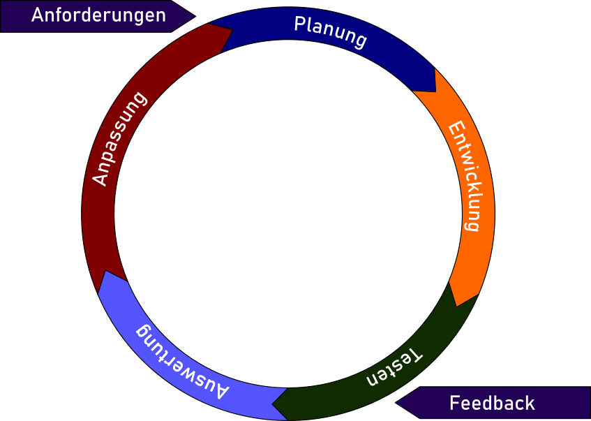

Wasserfallmodell vs.Iteratives Modell
KOM-ITIL
Sebastian Meisel
Unterschied zwischen Wasserfall-Modell und interaktiven Modellen im Projektmanagement
Wasserfall-Modell

Abbildung 1: Wasserfallmodell
Hauptmerkmale
- Stark dokumentgetrieben
- Sequenzielles Modell
- Umfangreiche Planung und Dokumentation
Symbolik des Wasserfalls
- Der Begriff „Wasserfall“ symbolisiert die Einweg-Natur des Prozesses.
- Jede Phase fließt in die nächste, ohne Möglichkeit zur Rückkehr.
Zusätzliche Anmerkungen
Iteratives Modelle (z. B. Agile, Scrum)

Abbildung 2: Iteratives Modell
Hauptmerkmale
- Flexibel und adaptiv
- Kontinuierliche Kommunikation
- Weniger Fokus auf umfangreiche Dokumentation
- Nutzer-Feedback ist integraler Bestandteil
- Iterativ: Zyklen der Planung, Umsetzung, Überprüfung und Anpassung
Bedeutung von Iterativ
- „Iterativ“ bezieht sich auf die wiederholte Durchführung von Zyklen.
- Jeder Zyklus verbessert das Produkt basierend auf den Erfahrungen des vorherigen.